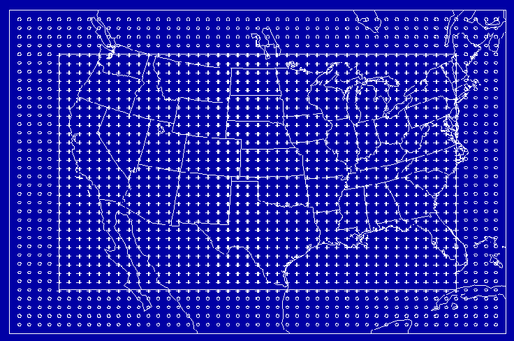

Fig. 2.1 - The PIRCS 60-km polar stereographic grid. Every second grid
point of the inner domain is marked with a +; every second grid point
of the outer domain (forcing frame) is marked with a o.
Orientation of the inner domain:
Central point (X_28, Y_41) (37.50 N, 100.00 W)
Lower left corner (X_1 , Y_1) (23.07 N, 117.79 W)
Upper right corner (X_55, Y_81) (45.41 N, 70.50 W).